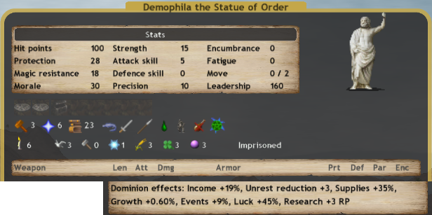
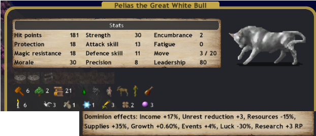

Nation Overview
Sauromatia is generally about summoning skeletons and being weak.
They are almost the weakest nation in EA, beaten only by UW nations.
In part their endgame is absolutely pathetic.
They get none of the good lategame buffs natively.
All of their late-game must be summoned, which is why I tend to go M3L3
Paradoxically their main strategy, both tactically and strategically, is to not die until they win.
Pretender Overview
Income scales to increase fort production.
Magic scales because best research of EA.
Luck to compliment Magic and get some of the best heroes in EA.
Blesses either to:
- Help early game expansion, in the case for N/W,
- Help Warrior Sorceresses, in the case of W/E,
- Help endgame diversity, in the case of E/S.
Pretender Builds:
Scales Builds
The purpose of scales builds is to have strong scales.
View examples of scales builds.
Bless Builds
Bless Builds are made mostly for bless rushes.
Give a nations sacred incredible power and rush someone with overwhelming strength.
Hopefully a bless rush will give you enough of an early advantage to roll over everyone else.

View examples of bless builds.
Awake Builds
Awoken pretenders study hard and fuck shit up even harder